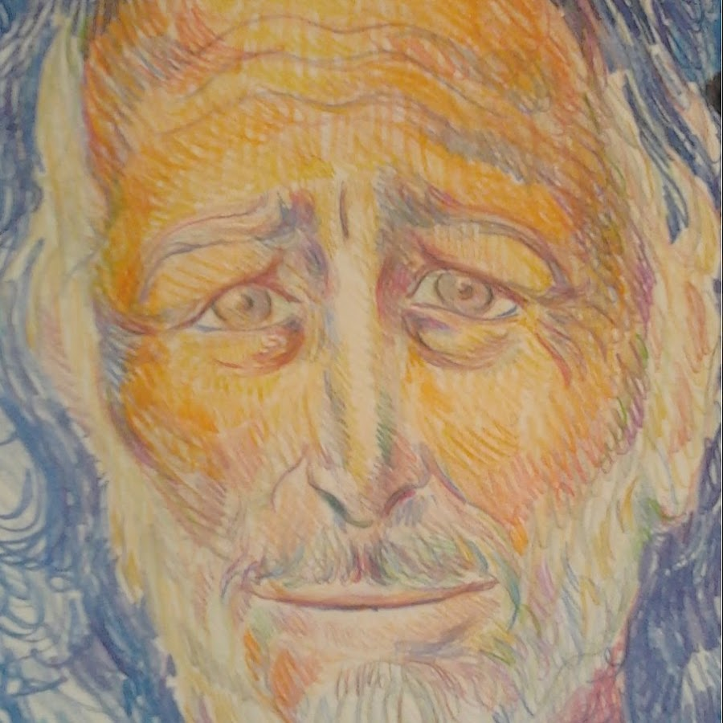
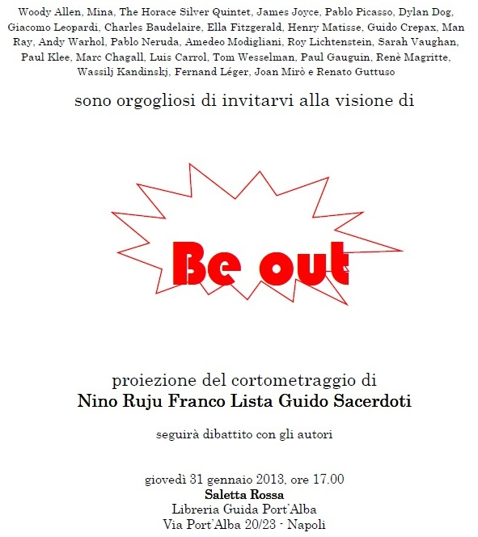

Guelfo Margherita
Esplora video, playlist e riflessioni sul pensiero complesso, la psicoanalisi e l’educazione.
Lezioni, Conferenze e seminari
Guelfo racconta W.R. Bion
La vita di Bion
La testa di Bion
Bion pensatore complesso
Bion come maestro
Apprendere Bion
L’eruzione dell’intuizione
I temi del pensiero di Bion
Sperimentiamo qui D↔PS
Sperimentiamo ora PS↔D
L’origine del pensiero di Bion
L’apparato per pensare
Lezioni, Conferenze e seminari
lezione sperieziale al corso triennale di psicologia della Federico II anno 2004, aula scalone della minerva
Seminario Continuativo clinica psichiatrica università Federico II 2011
Video 1 Seminario
Video 2 Seminario
Video 3 Seminario
Video 4 Seminario
Video 5 Seminario
Video 6 Seminario
Seminario Continuativo 2
Seminario Continuativo 2 – Video 1
Seminario Continuativo 2 – Video 2
Seminario Continuativo 2 – Video 3
Seminario Continuativo 2 – Video 4
Seminario Continuativo 2 – Video 5
Seminario Continuativo 2 – Video 6
Serie di video sulla Masse e il Golem
Massa e setting: il mito del Golem
Mito e scienza nella costruzione del contenitore
Identità e linguaggi nella massa del Golem
Processi mentali auto-osservati
Setting lineari e complessi
Il setting multistrato
Video Incontri
Video Incontro – 1
Video Incontro – 2
Video Incontro – 3
Video Incontro – 4
Video Incontro – 5
Video Incontro – 6
Video Incontro – 7
Video Incontro – 8
Video Incontro – 9
Video Incontro – 10
Video Incontro – 11
Video Incontro – 12
Video Incontro – 13
Video Incontro – 14
Video Incontro – 15
Video Incontro – 16
Video Incontro – 17
Video Incontro – 18
Video Incontro – 19
Video Incontro – 20
Video Incontro – 21
Video Incontro – 22
Video Incontro – 23
Video Incontro – 24
Video Incontro – 25
Video Incontro – 26
Video Incontro – 27
Video Incontro – 28
Video Incontro – 29
Video Incontro – 30
Video Incontro – 31
Video Incontro – 32
Video Incontro – 33
Video Incontro – 34
Video Incontro – 35
Video Incontro – 36
Video Incontro – 37
Napoli, 22/05/2014 - intervento di Guelfo Margherita alla giornata:
"La libertà di amare e di apprendere - per ricordare Guido Sacerdoti"
ritratto-guelfo-miniaturaCome ogni giovane intellettuale della seconda metà del secolo breve Guido confrontò la sua curiosità e la sua voglia di liberazione con i due "mostri sacri" del Marxismo e della Psicoanalisi. Da bravo ebreo, alieno da conformismi, usò queste ideologie, e i loro conti fatti con Libertà e Ribellione, con la leggerezza autoironica di un Woody Allen; con uniforme atteggiamento mentale guardò quindi all'organizzazione della produzione, alle egemonie politico-sociali, alla tirannia mentale dei doveri e, perché no, al collasso dei limiti del corpo.
Era il nostro '68 quando lo incontrai, io giovane assistente lui brillante leader di un gruppo di studenti di sinistra, durante la mitica occupazione dei 100 giorni a Medicina, quella che sovvertì l'organizzazione feudale della facoltà e le vecchie baronie. Ma un evento rivoluzionario non è per sempre, esso permane finché restano la spinta e la costante attenzione alla restaurazione sclerotizzante dei venturi apparati politici, burocratici, universitari e perfino mentali e somatici. La risposta allergica al cambiamento tende a ripristinare l'omeostasi precedente. La capacità di individuare la mancanza di tensione etica trasformativa anche nelle strutture migliori, prodotte magari dagli stessi movimenti, ed il loro ripristino conformistico, caratterizzò la delusione del '68 di Guido e di alcuni. Altri, con storie diverse, possono aver attraversato un altro '68 con differenti fini e differenti risultati.
Si è qui già parlato del suo rapporto con il Marxisimo, a me tocca quello con la Psicoanalisi: descrivere Guido e la sua delicatezza nell'attraversare un campo che, benché gli fosse mentalmente totalmente congeniale, sentiva non suo. Guido pur non essendo psicoanalista per mancanza di una formazione specifica, aveva un cervello psicoanalitico. Egli sapeva cogliere e tradurre il senso trasmissibile della Babele Onirica prodotta dal Caos. Questa era l'operazione, che non esiterei a chiamare psicoanalitica, che lui compiva con le restituzioni che dava nel lavoro politico, in quello con le istituzioni, coi suoi pazienti allergici, coi gruppi dei suoi amici e perfino affrescando una discoteca: e vediamo come:
Un gruppo di personaggi abita l'interno del cervello di Guido e, da qui, ci invita con un volantino ad entrare in questo spazio per la festa della loro unione.
L'anfitrione officia aggregando la loro omogenea disomogeneità in un insieme al di là dei Secoli e dei Continenti, al di là degli Strumenti Espressivi e dei Linguaggi.
Un percorso labirintico tra i meandri di un cervello affrescato con colori, musica, segni, poesia; che cerca e trova il senso dello stare insieme dei suoi contenuti, proiettandolo sulle pareti della Discoteca. Il senso del gruppo diviene così il senso di un sogno.
E come ogni sogno in gruppo, questo appartiene non solo al suo sognatore, ma anche a tutto il sistema a monte che il sognatore esprime; cioè l'intero gruppo degli invitanti di cui il sognatore potrebbe essere, paradossalmente, a sua volta un sogno (con questo circuito sembra di immergersi in una novella di Borges). Per finire poi, perchè no, al sogno a valle, quello di tutti noi invitati-fruitori che guardiamo il video(1) e cominciamo a sognare, come nostro, il loro sogno. Un universo di sogni e fantasie e l'intreccio di spazi mentali multistrato per contenerlo; come gli spazi iperbolici non euclidei di Lobacewskij; insiemi collegati da ombelichi e tunnel spaziali. Potrebbe essere una delle cosmicomiche; peccato che Calvino non sia tra gli invitanti.

I sogni dei singoli personaggi sognatori convergono così nel sogno di Guido (la discoteca, il video) che mescolandoli nello shaker con uno spruzzo di ironica angostura, li colerà nella nostra gola per farli diventare così il nostro sogno di gruppo.
Sognato da tutti insieme!
Noi stiamo insieme, ora qui, legati dal sogno che attraverso il video coagula il nostro gruppo. E così che sogni e miti strutturano e cementano gruppi e nazioni.
"Gruppo" e "Sogno" sono due modalità con cui gli umani sciolgono i loro confini individuali. Livelli diversi dello stesso fenomeno.
Un uomo recita tutto il suo gruppo interno nel suo sogno; tutte le "parti" gli appartengono e concorrono a costruirlo come unità sovra-sistemica.
Credo che "Be Out" sia l'apice del potere creativo di Guido.
L'invenzione di un linguaggio multimodale nuovo, capace di usare il video come forma originale per rendere unitario ed onirico il risultato dell'esplorazione conoscitiva delle sue identificazioni proiettive nel cervello degli artisti esplorati, dei loro sogni e dei loro linguaggi.
Abbiamo osservato il clivaggio tra sogno e gruppo nel lavoro di Guido in discoteca, che ne avvicina gli insiemi fino a sovrapporli in un multistrato di universi fisici e mentali differenti. Ora mi intriga come sia pervaso da interesse per la ricerca psicoanalitica lo spazio del suo cervello dentro cui si sviluppa ed avviluppa la sua creatività unificatrice. Questo spazio è come un bacino d'attrazione caotico (uno spazio delle fasi lo chiamerebbero i matematici del Caos) per le imprevedibili molteplicità combinatorie delle possibili relazioni di tanti personaggi e linguaggi dialoganti in un discorso che si fa coerente.
La teoria del Caos lo chiamerebbe un attrattore frattalico, spalmato ora sulle pareti delle discoteca dalle combinatorie reali e virtuali delle singole traiettorie individuali. Ora la voce di Guido lo raccoglie e lo spalma sulle pareti della nostra mente gruppale, un tempio pieno di fruitori affascinati.
La prospettiva si è frantumata; il punto di vista binoculare, uso a sostenerla, si è sfioccato e Guido, insieme a lui, come un analista di gruppo, nella molteplicità dei vertici occupati da ognuno dei partecipanti. Il gruppo non ha, a differenza dell'individuo, un punto di vista binoculare che permetta di integrare la profondità della costruzione prospettica rinascimentale; la senso-percezione da integrare nel cervello gruppale è necessariamente polioculare, molteplice. E' questo che io chiamo "l'occhio della mosca". Per ogni individuo la sfaccettatura di un ommatide raccoglie la senso-percezione del gruppo dal suo vertice, e poi la invia alla mente gruppale. L'integrazione, resa complessa dalla molteplicità, svela uno spazio surreale, iperbolico composto dalla sommatoria di tutti gli innumerevoli punti di vista possibili in uno spazio-tempo annullato nelle equivalenze prospettiche dalla totale sincronicità e sintopia.
In questa prospettiva, quella polioculare del gruppo, l'universo, in una costruzione onirica, potrebbe assomigliare ad un quadro di Picasso.
La mente di un gruppo in stato emozionale non produce fatti o racconti lineari che si evidenziano su uno sfondo, ma una mescolanza affettiva in cui nuotano brandelli di fantasie, sogni, miti che stanno perdendo il loro stato individuale per fondersi nella nuova condizione identitaria del gruppo.
Guido come un analista sostiene la modalità espressiva più idonea perchè il gruppo possa esprimerla costruendo lo stile onirico.
La voce di Guido ed il suo discorso delimitano ora lo spazio sovra-sistemico ed unificante in cui si allarga la mente gruppale. Ancora come un analista di gruppo egli definisce un setting, lo regge e ne valuta la produttività immaginativa moltiplicata dal numero degli apporti. Guido raccoglie e comunica il prodotto nel setting come senso del contesto. Questo prodotto, restituito ora attraverso il linguaggio artistico, assomiglia ad un azione interpretativa. Questa lega più sogni e più linguaggi in un unico sogno, globale e complesso, che viene così spostato continuamente di livello dall'uno al molteplice e viceversa nel multistrato dei sogni, mantenendo l'oscillazione tra il sogno di Guido e quello degli altri sognatori(2). Si costruisce così il mito in cui noi tutti possiamo riconoscerci.
Torniamo ora al ’68 e all’occupazione di Medicina. Io, innamorato di Basaglia e della Psicoanalisi (di cui ero in formazione con Matte Blanco) portavo a braccetto per la città i miei pazienti psicotici ricoverati in un reparto che i capi volevano invece rigidamente chiuso, come la mentalità dell’istituto che imprigionava, a tutti noi a qualunque titolo lo frequentassimo, corpi e cervelli trattando la Psichiatria come sottoprodotto ciarlatanesco della Neurologia.
In quei 100 giorni di fantasia al potere, come prassi per i giovani docenti che si occupavano di ricerche supposte d'avanguardia perchè contrastate dalle istituzioni a cui appartenevano, tenni un contro-corso sulla Psicoanalisi per gli studenti occupanti. Guido era uno dei più interessati ed attivi. Da allora siamo sempre stati dalla stessa parte della barricata.
Quando la restaurazione si occupò dei ribelli, e il mio istituto ne fu la punta di diamante, questa portò in cattedra, come da prassi, quelli di noi che erano recuperabili e disperse le sacche resistenti. Io, naturalmente cacciato via, caddi in piedi: avevo tanti titoli che mi fu facile vincere un concorso di primario ospedaliero e riciclare la mia voglia di trasformare il mondo ricominciando allora da un luogo siolo come il Manicomio.
Fu qui che ri-incontrai Guido. Venne a trovarmi con Massimo Menegozzo. Erano diventati redattori della rivista “ Il Cuore batte a Sinistra” e volevano fare un numero sulla Nuova Psichiatria e Vecchia Repressione. Da una parte una psichiatria democratica stato nascente, dall’altra il formalismo oppressivo che nascondeva un brutale annichilimento.
Come far entrare Mimmo Iodice ed i suoi apparati fotografici in un luogo proibito da un assetto gerarchico, burocratico, politico che impediva di far conoscere fuori le brutture interne al manicomio! Ma far conoscere le catene ed il nostro tentativo di spezzarle era anche il mio scopo e divenni il passe-partout di questa operazione carbonara in chiave ludica di cui i giovani psichiatri e psicologi, che frequentavano la mia divisione per imparare la nuova psichiatria, furono entusiasti.
La rivista uscì(3) con grande scandalo negli apparati e successo nel movimento. Li potei misurare, entrambi, dal tasso di critica che riscossi nell’istituzione. Se ci fosse stato qualcosa di peggio del manicomio mi avrebbero buttato lì.
E forse dopo questo lo fecero!
Ancora fu l’arte (la magistrale documentazione fotografica di Mimmo Iodice) il tramite del messaggio comunicativo; questo fu recepito come un'interpretazione agita ai differenti livelli (clinico, gruppale, burocratico, sociale, politico) dell'istituzione. Un messaggio multi-livello e multi-uso: così la “pazzia” delle nostre menti costringe i nostri corpi in condizioni disumane; facendo poi passare loro per i “malati”. Questa proposizione da senso ed introduce il prossimo paragrafo.
Guido affrontò la sua professione di allergologo anche da una prospettiva e con una cultura psicoanalitica. Fece una sua analisi personale con un analista SPI/IPA e partecipò indirettamente, anche con interventi e scritti, alla vita di questa disciplina che intellettualmente ed emotivamente lo intrigava. Sponsorizzò e presentò, ad esempio,(4) la pubblicazione di uno scritto di suo zio Carlo Levi (di cui era curatore ed erede intellettuale) sulla Teoria delle Masse psicologiche che fu inserito in "Koinos", la rivista dell'istituto Italiano di Psicoanalisi di Gruppo, in un numero monografico a queste dedicato(5).
Guido riusciva a parlare dei segni e dei sintomi del corpo da medico, ma anche con la capacità di spostarli su un piano simbolico cogliendo il loro valore relazionale, sia anamnestico che attuale. Ricordo un suo seminario, all' Istituto di Psicoanalisi di Gruppo a Roma, in cui presentò il filmato di una sua paziente allergica(6). Grande interesse suscitò la sua descrizione della relazione terapeutica: il corpo-paziente si scioglie nel sogno ambivalente in cui la lotta di liberazione, sia dal sintomo allergico che dalla libertà stessa, si fondono nell'individuazione di un nuovo nemico: l'allergologo allergizzante in un complesso rapporto tra oppressione/ribellione. Per lui spesso era il medico, più che l'antigene, ad essere allergizzante.
In un convegno di Psichiatri, Psicologi, Psicoananlisti sui "Modi della Relazione" così si esprime nel suo paper, sulle caratteristiche della relazione allergica; lascio la parola a lui(7):
“Le donne allergiche a tutto bussano alla porta degli allergologi allergizzati. Le une e gli altri sono affratellati da una guerra di civiltà (tolleranza zero!) contro un nemico che oramai è penetrato fin dentro casa: cibi, farmaci, profumi, bigiotteria, l’inchiostro dei quotidiani, le polveri, il gesso delle lavagne, l’acqua delle docce, gli indumenti di acrilico, le colle dei parati, gli additivi chimici, il sole, le mimose… Il numero e la varietà degli agenti nemici infiltrati cresce di ora in ora. Il mondo si presenta sempre più ostile e pieno di minacce nascoste. D’altra parte molte storie delle pazienti sono segnate da violenze e da antichi traumi”.
“In ogni organo e apparato: pruriti, orticarie, angioedemi, tossi, asme, spasmi laringei, coliche addominali, diarree, stitichezze, tachicardie, dolori anginosi, aumenti e cali pressori, cefalee…Una inquietudine che può nascere al solo pensiero della salsa di pomodoro, come alla vista del sangue, del sangue mestruale, ogni mese; un senso di angoscia da mozzarella filante che, al pari degli spaghetti e delle fibre del prosciutto crudo, annodandosi in gola ti fanno soffocare; un gonfiore addominale, una nausea da lievito, da pasta cresciuta, da panza-rotto; un senso di mancamento, di deliquio, di pericolosissimo abbandono orgasmico alla sola vista di certe specie marine (i frutti di madre), come le ostriche e i pesci, il cui consumo si accompagna immancabilmente a un dolore penetrante; la percezione di una sensazione amara, come d’inchiostro, ogni volta che si assaggiano i cal-amari; quando poi il latte (tollerato per anni) non risvegli una nausea così intensa da ricordare il vomito gravidico, e le fragole non generino un insopportabile prurito in gola”.
“Le schiere delle allergiche alimentari, nella loro incessante migrazione attraverso gli studi medici alla ricerca della Terra Promessa, approdano a quello dell’allergologo allergizzante, con l’obbiettivo, in questo caso sempre raggiunto, di ricevere da lui la definitiva certificazione sacerdotale......Piacere di prescrivere diete di eliminazione (suprema prova di dominio da parte dei medici “allergici”) e, simmetricamente, al piacere, da parte delle pazienti, di soggiacere a queste diete.....Selezione degli alimenti, la propria alterità rispetto agli altri tutto- mangianti, di osservare ogni giorno, e più volte al giorno, il rituale di questa religione privata che impone la separazione dei cibi puri da quelli impuri, come detta la Bibbia, pratica di espiazione di colpe mai commesse, rito di purificazione, dopo il quale si spera di poter rinascere, questa forma di Ramadan”.
“Come non rispondere al richiamo dei medici allergizzanti quando ti offrono, fin dentro le opulente, scintillanti farmacie al neon, i loro test new age.....Mesi di diete depauperanti, ridotte a cibarsi di pappe e semolini, come bambine in svezzamento.....Intolleranti a questo o a quell’alimento o additivo, di fronte all’inutilità di tanti sacrifici cominciano a provare qualche dubbio. Sentono di averne abbastanza di giuoco e in cuor loro desiderano che un nuovo esorcista le liberi dalla fattura che altri esorcisti hanno contribuito a formulare: da sole non ce la fanno a varcare la soglia per uscire all’aperto, a dismettere i panni del personaggio col quale per tanti anni hanno calcato le scene.....Ma il loro pensiero tutto “operativo”, interamente centrato sulla parmigiana di melanzane, i gamberoni, le emorroidi, le diarree, i vomiti, le acidità, i meteorismi, i gonfiori, i fermenti lattici, il lattosio, i pneumologi, i gastroenterologi, gli omeopati, questo corpo che non vuol saperne di dimagrire nonostante la dieta… Ostinatamente continueranno a scrutare la femminea VES e il suo fedele compagno, il TAS, nonché il RAST, il PRIST, il Prick, il Pap, la PET, parole monche, balbettio infantile in un codice sconosciuto, forse quello onomatopeico dei fumetti”.
“La paziente non se ne va a spasso da sola ma sta sempre a braccetto dal suo allergologo allergizzante.....Quando i medici non sanno che pesci pigliare, dicono: è lo stress!... io il prurito ce l’ho davvero!... nessuno mi crede… [accenno a qualche lacrima, poi il tono torna sprezzante e minaccioso] non mi dica anche lei che è una cosa di nervi!”.
“Bisogna, allora, con l’infinita pazienza, accettare inizialmente il giuoco proposto: pricckettare quegli avambracci (percorsi da improvvisi rossori, come le guance di una fanciulla imbarazzata) con aghi intinti nel sartù di riso, distinguendo accuratamente quello con e quello senza pomodoro, per dimostrare che il sartù non provoca reazioni ( tra tante lacrime un po’ di riso, ogni tanto, lei potrebbe pure goderselo!), infilar tra le labbra (trepidanti e restie ad aprirsi) bocconcini di caprese e di pizza Capricciosa. (Vuoi continuare a fare capricci anche quando tua madre, finalmente, è morta? O forse mi sbaglio: lei è ancora qui),
“Le donne allergiche a tutti gli alimenti sono del pari allergiche a tutti i farmaci.....D’altra parte, alimenti e farmaci non sono forse la stessa cosa? Esterni e estranei, entrano dentro di noi attraverso la medesima apertura, la bocca, devono essere deglutiti, poi finiscono nella pancia, entrambi, in definitiva, protagonisti delle fantasie infantili di inseminazione orale.....
I farmaci risultano infidi.....Evocatori di un tradimento. Infatti inizialmente danno l’illusione di farsi tollerare, poi si rivelano per quel che sono, come fidanzati premurosi e gentili che divengono inaspettatamente brutali e violenti alla prima notte di matrimonio, o come anziani mariti che in famiglia si ritenevano incapaci di infedeltà e poi scappano con badanti ucraine belle come il sole.....All’ansia per la malattia da curare, dunque, si somma l’ansia per la malattia che il farmaco può procurare”.
“Immersi in questo scenario che si avvita su sé stesso, compatto, desolato, bloccato, gli allergologi che, infastiditi, non abbiano già provveduto a respingere la paziente (
Nella stessa occasione, pronosticando il successo che avrebbe avuto gli avevo chiesto di concludere il convegno con una delle sue filastrocche gruppali, ludico-estetiche di cui era maestro nelle riunioni con gli amici ( di queste e del loro valore parlerò dopo). Trascrivo dagli atti del convegno, in cui la filastrocca acquista dignità di spazio tra le relazioni scientifiche, il pezzo che commenta la mia relazione(8) proprio sull'occhio della mosca.
“Se l’occhio della mosca varca la soglia
e, matriosca, scontra il suo conflitto,
lo stato di coscienza dell’eroe
si allarga e va slittando.
Ma NOI, come operiamo e come stiamo
e quanto vi annoiate dentro l’utero
di quest’ambiente rimbombante voci?
Spazio-tempo: dov’è ibrido? Nuota,
astratto catastrofico nel campo
che si allarga via via dai suoi confini,
dal duale al plurale, e va alla mosca
soggettivante le entità affettive
che un Dio-soprasistema mescola ai bond”.
Col valore profondo del non-sense e di ciò che vela/svela oltre la soglia, nel suo commento Guido coglie non solo il senso plurale della mia relazione ma anche il come il contributo fosse risuonato ed avesse scosso i limiti del campo e fosse stato emozionalmente accolto nel auditorio; una perfetta descrizione sintetica della relazione tra il contesto ambientale in cui era portato e il contenuto che io introducevo. Si potrebbe chiamare una interpretazione di contesto.
Salmon Resnik, uno dei massimi esponenti della psicoanalisi contemporanea, che con la moglie Anna presiedeva il convegno, così encomiò Guido ed il suo nuovo linguaggio(9):
“In una coppia in una situazione di conflitto, che è vita, in un gruppo che nasce e che poi non rimane, la presenza e la nascita del messia risolve il problema della coppia. Grazie figlio mio, ci voleva un messia che nasce nella coppia che ha potuto verbalizzare e dare vita a tutto quello che è stato il contributo di tutti. Mamma e papà siamo felici della venuta del messia”.
Mi sento che ho compiuto 18 anni(10)
Un immenso gabbiano diomedeo
Se all’imbrunire a Trentaremi vedi
volare sopra nidi di pinoli
e un biglietto ti lascia che è “crollato”
a Pizzolungo tagliando quel salame,
aboliamo la luna e i Faraglioni
illuminiamo al grido di Gomorra.
Odio Veltroni: lui nasce tarato.
Io stavo a Rio e non potei votare.
o non dai la ricetta, reticente,
o la ricetta sbagliata gliela scrivi.
E quando vai in Bolina: iucca fritto
o nella sugna l’antico pane fritto
delizioso! uragano con la gente
appesa ai tetti (e manca Giorgia o sbaglio?)
Ho una figlia architetta a Barcellona
Ero a Parigi e lessi di orfanelli
sottoposti a sevizie e senza Pane.
Era un gaglioffo il padre ma teneva
bamboccioni ad Aversa in stanze aperte,
Mentre Scarano andrebbe in Presidenza!
Se è alto un metro e ottanta il tuo nemico
e pesa cento chili, è un gran sollievo:
meglio saperlo chi ti vuole fare
gastroscopia in Brasile: neanche morta!
Camicia nera: siamo al ventidue:
dai tombini fuoriesce il fiume carsico
di quella destra oscena e italianista,
ma la figlia romana ha un posto al sole,
e Benjamin non vide il ventisette
(la rivoluzione acceca ogni visione)
i ragazzi che mangiano rifiuti
mentre il sartù di Euresta piace molto
alla Madonna assisa nel suo azzurro
e un bicchiere tu rompi sui calzoni
che “toglili De Seta, io sono un medico!"
li mandiamo in Srilanka per lavarli,
dove gli ombrelli neri della City
vengono aperti per parare il sole.
Sudat rumeno, al Capri Palace assunto
come un dannato viveva e di magia
e Ausilia Veneruso pubblicava
le sue conchiglie storiche capresi.
Esposito, scheletrico avanzava
con passo lento e lungo i corridoi
ieratico, solenne, pio porgeva
mani al bacio di certe sue pazienti.
Occhi verdi e corvini i bei capelli
Annamaria girava per le stanze
cantando a squarciagola “ohi Marì”
Ma guarda cosa ha fatto qui Vittorio:
nel bicchiere, felice, la pipì!
Guido nel gruppo, ora quello degli amici.
Si aggira nel sito conviviale quasi in uno stato di coscienza alterato.
E’ dovunque! Senza partecipare attivamente. Un blocco in mano osserva e registra.
Non interlocutore, ma raccoglitore di tracce da trasformare in incomprensibili indizi (quello riportato in calce ne è un esempio).
Si frammenta nei gruppuscoli in cui la comunità di amici si divide per l’evento festoso, ne raccoglie brandelli ideativi ed emozionali dal di dentro, in una sorta di identificazione proiettiva, e li ricuce tra loro usando come suo filo il ritmo dell’endecasillabo. I discorsi perdono il senso logico originale spesso sbiadito e divengono schiaffi logici oppure carezze per recuperare i sottofondi narcisistici dei protagonisti (allora io c’ero!).
Lui ciondola e registra col suo apparato sensoriale esplorativo, una collezione di ommatidi in cui specchia i microgruppi diversi da fondere poi. Usa di nuovo, come un analista gruppale, l'occhio della mosca: parole, odori, divani, tavolate, giardini, sughi, colori, amori, bicchieri, discorsi, tramonti, invidie, vini: il tutto allineato dal campo emozionale del gruppo con la medesima valenza sulla tela del quadro di Picasso.
Guido lo raccoglie, lo frulla e lo fonde in una filastrocca capace di digerire nella sua testa i vecchi sensi originari, spezzandone la logica stantia ed integrandone i frammenti in un sovra-sistema con un nuovo tempo, un nuovo spazio e un nuovo senso affettivo identitario; cioè chi siamo il Noi a cui lui parla?
Un ritmo metrico, un po’ narcisista un po’ gaudente, raccoglie la visibilità ludica del non-senso nella trasformazione del contesto in inutile (?) contenuto; questo spiazzamento conferisce un paradossale senso ironico ed estetico alla restituzione, accompagnata dall’immancabile applauso degli amici riconoscenti(si).
Essa ha anche però il profondo senso di una interpretazione psicoanalitica di gruppo. Perché nel non-senso logico si nasconde il tranquillizzante senso della rassicurazione affettiva infantile dell'essere cullati insieme dentro il ritmo della metrica del sogno della filastrocca.
A Guido restio spesso suggerivo che questi scritti avrebbero dovuti essere raccolti come materiale clinico per la psicoanalisi di un dolente gruppo sociale di intellettuali sopravvissuti a caso, idealisti impotenti, in una città morente.
Per concludere questi scritti ci presentificano il dono fatto da Guido al suo gruppo di amici; l'operazione cioè di ristrutturazione del nostro campo amicale introducendovi una funzione analitica collettiva; l'individuare il livello profondo di questo nostro stare insieme, il suo nuovo senso, la sua nuova coscienza, la sua nuova identità.
Guido ci partecipa e mostra un versante intimo del senso di esistenza di questa fetta della borghesia intellettuale napoletana, di cui faceva profondamente parte, attraverso i feedback di "non sense" dei suoi privati rituali conviviali di autoconferma. Nel descriverli lui non usa dall'esterno il disprezzo della matita caustica di Grosz o lo spostamento surreale del vagare inutile di Bunuel. Usa, dall'interno, l'affettuosa e tollerante autoironia di chi condivide un gioco di autoconferma fine a se stesso: stiamo insieme perché siamo cresciuti insieme respirando la stessa sensuale malinconia, la stessa pigra bellezza, la stessa dolorosa inutilità. Nel '99 a noi napoletani la restaurazione avrebbe tagliato la testa, ora pare essa ci abbia solo deconnesso i cervelli dalla possibilità di una pratica sociale incisiva.
Il risultato è permettere di riconoscere e legittimare la dimensione ludica come unico strumento per poter reggere ipomaniacalmente il dolore del fallimento sociale di quelli di noi che siamo rimasti; operazione utile tra l'altro all'indagine e descrizione del nostro spazio di presa di coscienza identitaria; quello con tutti forse i nostri limiti, del gruppo dei suoi amici idealisti e sognatori frequentatori del campo in cui nascono questi scritti. Non si svela, in essi, una forza sociale coagulata dalla missione di forte segno culturale di imporre egemonie politiche, ma la nostra qualità rivelata è solo la nostra capacità specifica di sognare ideali (presupposto fondamentalmente perché le utopie non muoiano e possano in futuro incarnare possibili realtà permanenti).
La nostra vera forza che Guido evidenzia e ci restituisce è quella di sentire, finché durerà, il reciproco calore dello stare affettivamente a sognare insieme, magari ancora con lui, per continuare con tolleranza a giocare molto seriamente a prenderci in giro cavalcando i nostri eroici cavallucci nella giostra colorata della nostra città.
Grazie Guido perché nel tuo attraversamento del mondo psicoanalitico, per come io ti ho conosciuto, hai sempre portato tra le braccia due doni di speranza: il Sogno e la Libertà.
Ciao, se è vero che il sogno non ha tempo, ci vediamo al prossimo giro.
Be out: Cortometraggio di Nino Ruju, Franco Lista e Guido Sacerdoti (2012).
Per una estensione dei concetti di "Multistrato Complesso", "Caos e Psicoanalisi", "Occhio della Mosca", "Interpretazi brone Agita" cfr G.Margherita: "L'Insieme Multistrato Complesso. Gruppi Masse e Istituzioni tra Caos e Psicoanalisi". Armando, Roma, 2012. Ed anche le voci glossario su questo stesso sito
"Il cuore batte a sinistra - lotte per la salute in Campania." C.L.U. ed., I, fasc. 2, 1977.
G.Sacerdoti: "Breve presentazione di massa" in Koinos, Gruppo e Funzione Analitica. XXXI, fasc.2, 11, 2010.
Carlo Levi: "Massa" in Koinos, Gruppo e Funzione Analitica. XXXI, fasc.2, 14 2010.
"La donna che era allergica a tutto": cortometraggio di G. Sacerdoti, M. Marmo, S. Mascolo. (Arena production - 2006.)
G.Sacerdoti:"Le donne allergiche a tutto e i loro medici: le diete e il volo." Atti del convegno "Oltre la Soglia" Confronto sui modi di relazione. Ischia 10/11ottobre 2008.
Op.cit: pag 185.
Op.Cit: pag191.
G.Sacerdoti: manoscritto inedito